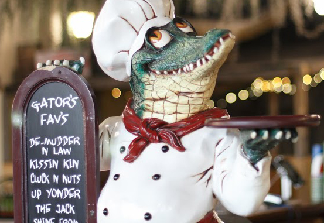
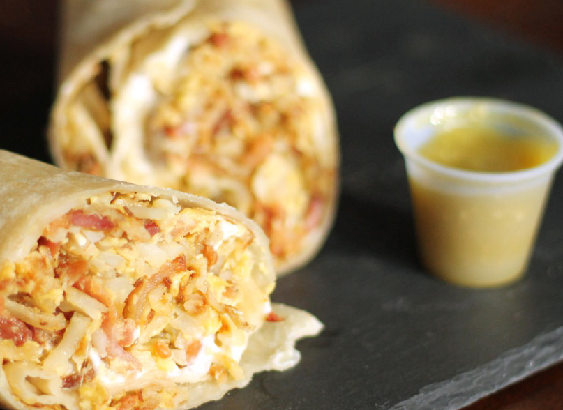

Unique to Rexburg
The Burg
110 W 4th S, Rexburg, ID 83440The Burg is a great place to get a yummy classic cheeseburger and delicious thick milkshakes. It was made by students for students, but everyone can enjoy a burger from The Burg.

Gator Jacks
160 W 2nd S, Rexburg, ID 83440Take a trip to the southern swamp and enjoy a fresh sandwich from Gator Jacks. It a make your own sandwich place and you can get a chance to try some alligator bites. This is the place for unique yummy sandwiches.

Taqueria El Rancho
Bus: 312 W 4th S, Rexburg, ID 83440Restaurant: 727 N 2nd E, Rexburg, ID 83440Get a taste of authentic mexican food. Experience eating it in a bus or a sit down restaurant. Try their horchata its the best.